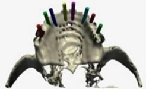

|
Ay
Tasarým, Nisan 2004 tarihinde ODTÜ Teknokent'te, ileri teknoloji
kullanarak hekimlerimize yardýmcý olmayý amaçlayarak kurulmuþtur.
Kuruluþundan baþlayarak, hekimlerimizden gelen talepler doðrultusunda
ürün ve hizmetlerini çeþitlendirmiþtir. Ürünleri sayesinde,
bazý tedavi yöntemleri Türkiye'de ilk defa uygulanabilmiþ,
Türk hasta ve hekimleri yüksek teknolojiden, ithal edilme
maliyetlerine göre nispeten uygun maliyetlerle yararlanabilmiþlerdir.

Firmamýz,
baþlýca aþaðýdaki konularda hizmet göstermektedir;
1)
Biyomodel üretimi
2) Ýmplant kýlavuzu üretimi
3) Medikal Sonlu Eleman Analizi
4) 3D Tarama
5) 2D Film Tarama (BT, X-ray, Dia, Negatif)
6) Proje temelli çalýþmalar
Aþaðýda,
Türkiye'de ilk kez geliþtirdiðimiz sistem sayesinde üretilen,
Mukoza Destekli Ýmplant kýlavuzlarý ile ilgili bir olgu sunumu
bulabilirsiniz.
ITI
Implantlarý ile Mukoza Destekli Ýmplant Operasyonu:
Prof. Dr. Murat AKKAYA (Ankara Üniversitesi Diþ Hekimliði
Fakültesi Periodontoloji ABD)
Doç Dr. Hakan TERZÝOÐLU ((Ankara Üniversitesi Diþ Hekimliði
Fakültesi Protez ABD)
Dr. Oðuz OZAN ((Ankara Üniversitesi Diþ Hekimliði Fakültesi
Protez ABD)
Implant
operasyonlarda insizyon kullanýlmasý, hekimler tarafýndan
olaðanlýkla tercih edilmektedir. Ancak insizyon hastada kanama
ve travmaya yol açabilmekte, ayný zamanda da operasyon süresini
uzatmaktadýr.
Ay
Tasarým tarafýndan geliþtirilen Mukoza Destekli Kýlavuzlar
sayesinde, insizyona gerek kalmamakta, bu sayede kanama ve
travma oldukça azalmaktadýr.
Mukoza
destekli implant operasyonu için ilk yapýlmasý gereken, hastanýn
kapanýþ ölçüsü ile bir radyo opak tarama protezi üretmektir.
Bu protez sayesinde tomografi çekilirken hastanýn mukoza bilgisi
de elde edilmiþ olur. Protez Ay Tasarým tarafýndan ya da kendi
laboratuarýnýzda üretilebilir. Basit ve ucuz bir iþlemdir.
Hekimin hastasýný Tomografiye ilk kez gönderirken Ay Tasarým
ile irtibat kurmasý ve Tarama Protokolünü istemesi tavsiye
edilir.
Elde
edilen aksiyal kesitlerin kullanýlmasý ile Implant3D yazýlýmýnda
planlama yapýlýr (Resim 1). Implant3D yazýlýmý için, herhangi
bir görüntüleme merkezinden elde edeceðiniz 1mm kesit kalýnlýðýna
sahip CD, Manyetik Optik Disk ya da Film Baskýsý yeterlidir.
Özel bir Bilgisayarlý Tomografi Makinesi'ne gereksinim yoktur.
Implant3D
yazýlýmý sayesinde eldeki kemik en uygun þekilde deðerlendirilerek
planlama yapýlýr (Resim 2).
Operasyona baþlamadan çok önce, hekimin elinde mukoza ve kemik
iliþkisi ile ilgili detaylý bilgiler bulunmaktadýr. Implant3D
ile yapýlan ölçümler birebirdir. Herhangi bir ölçek gerektirmez.
Yaklaþýk
1 saat süren planlama sonrasýnda, implantlarýn paralelliði,
perforasyonlar mümkün mertebe önlenerek saðlanýr (Resim 3).
Planlamanýn her aþamasýnda, kemik kalitesi, mukoza ve mandibular
kanal iliþkileri göz önüne alýnýr.
Detaylý
ve güvenilir planlama sayesinde, operasyondan önce operasyon
bütçesi büyük bir hassasiyetle çýkartýlýr. Operasyon sýrasýnda
yeni implant yerleþtirilmesi ya da planlanan implantýn yerleþtirilmemesi
riski ile karþýlaþýlmaz. Ýmplant saðlayýcýsýndan, sadece gerekli
olan sayýda implant talep edilir.
Ay
Tasarým'a planlamanýn gönderilmesi ile, 5 gün içerisinde çene
kemiðinin üç boyutlu modeli ve hekimin her frez için kullanacaðý
çapta kýlavuz seti teslim edilir (Resim 4). Bu resimde,
ITI implantlarý için, yukarýdaki planlamaya göre hazýrlanan
2.2, 2.8, 3.5, 4.2 mm'lik kýlavuzlar görülmektedir. Üretilen
kýlavuzlar implant markasýndan baðýmsýzdýr. Hekimin tercih
ettiði markaya ve çaplara göre üretim yapýlmaktadýr.
Operasyon
sýrasýnda, hastaya kýlavuzlar insizyon yapýlmadan yerleþtirilir.
Yerleþtirilen kýlavuzlardan frez iþlemi gerçekleþtirilir (Resim
5). Ýþlemden önce punch ile mukozadan parça kaldýrýlabilir.
Ýmplantlar yerleþtirilir ve mükemmele yakýn sonuç elde edilir
(Resim 6).
Not:
Konuyla ilgili daha fazla bilgi içeren PDF formatýndaki bir
döküman aþaðýdaki adresten indirilebilir:
www.aytasarim.com/noIncision.pdf
Ýrtibat:
Ayberk
Yaðýz
ayberk.yagiz@aytasarim.com
Ay
Tasarým Týbbi ve Endüstriyel Ürünler Makine San. ve Tic. Ltd.
Þti.
ODTÜ KOSGEB Teknoloji Geliþtirme Merkezi Müdürlüðü Ofis No:
208
ODTÜ Teknokent Çankaya Ankara
Tel: (312) 210 17 63
www.aytasarim.com
|